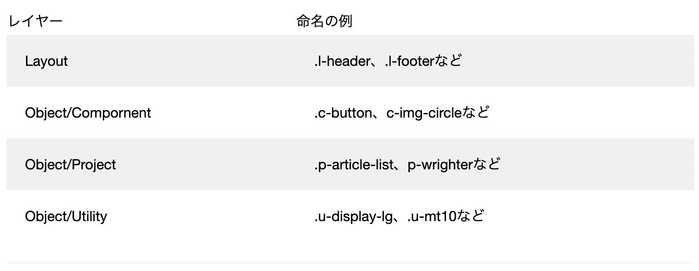
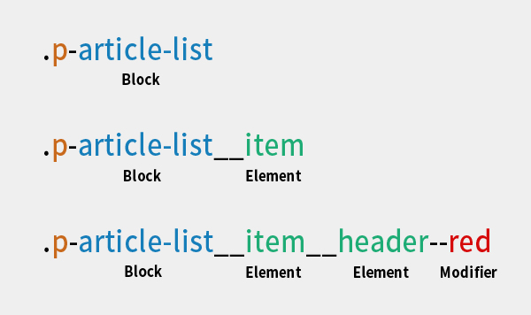
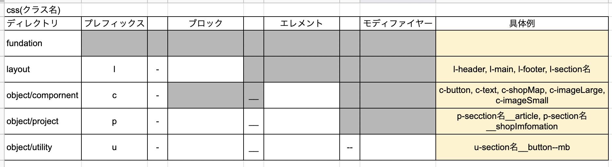

l-content
l-sidebar
camelCase:単語の先頭を大文字にしてつなげる
BEM記法や後述のFLOCSSと相性が良さそうなのでこれを使います。
camelCaseでないと上記のようにarticle-listの-(ハイフン)がModifierへの繋ぎやFLOCSSの接頭辞というもの混同しやすくなります。
article-listからarticleList__itemへ
大事なのはFLO(CPU)の順に記述すること
※Layoutに当ててレスポンシブデザイン確認する例
l-header
l-content
l-sidebar
このなかにProjectを配置していくんだなあと意識する
※CompornentとProjectの違いは？？
参考サイトパワーポイントやXDの１つのテキストエリアや図形がCompornent、それらをグループ化したものがProjectというイメージ
※Layoutレイヤーの定義
参考サイト少しわかりにくいですが、
Layoutレイヤーは、ただ単純にページにおけるヘッダー、フッター、サイドバーなどの要素を分けるためだけに存在しているレイヤー。ページにおいてただ一つの要素につけるのでID名でつけても良いし、classで統一すると決めてもよい。性質上、運用においても、まったくスタイリングがなかったり、せいぜいz-indexであったりpaddingをいくらか設定したりということはよくある。そういう時に「あれ、Layoutレイヤー、ちゃんと使えているのだろうか？」と不安になる必要はないということ。俯瞰的に見ると、その部分を担当できるのは、Layoutレイヤーしかないから。
という話かと。あとは
最近のwebサイトでは、横幅に応じたheaderやfooterの調整が多々発生しがち。例えばレスポンシブwebサイトにおいて「ある幅でサイドバーが消える」「ヘッダーの高さが減る」といった場合もLayoutレイヤーで担当できる。
あたりも大事かなと思いました。
上記サイトではscssを使っていて、最終style.scssにすべてインポートしてまとめている形ですが、私たちはscssまでは勉強していないのでそこまではしません。
ですがフォルダ構成としては概ねこの形で
それぞれのcssファイルを作成し、コピペで一つのファイルにまとめるか、一つずつcssファイルとしてfunction.phpに読み込む形になるかと思います。
LayoutやObjectの命名の際は頭文字をクラス名につけてどの種類の変更かわかりやすくする。
最終的な命名規則としては
これにcamelCaseを合わせて
p-articleList__のような形で命名をしてゆきます。
具体例
このような形になります。